HISTOGRAMA ORIGINAL


Pode-se observar alguns picos de pixels nas faixas de 50, 100 e 200, mas a concentração máxima de pixels chega a apenas 6.000, o que indica que os pixels estão bem distribuidos.
 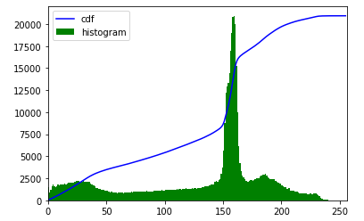
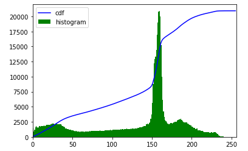
A maior concentração de pixels está na faixa de 150 a 170, ou seja, pixels de tonalidade media e clara.
 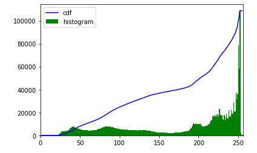
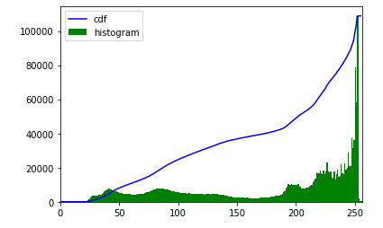
A foto é mais clara e luminosa que as outras duas, pode-se observar no histograma uma concentração de 100.000 pixels na faixa de 240-250, o que indica uma altíssima quantidade de pixels mais claros.
EQUALIZAÇÃO DO HISTOGRAMA
A equalização do histograma é feita por uma função de transformação que mapeia os pixels de entrada da região mais clara para os pixels de saida.
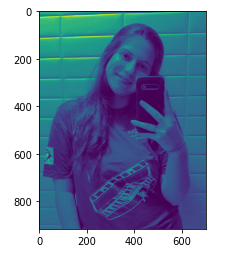 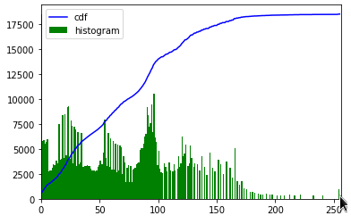Após a aplicação do equalizador, pode-se observar uma maior concentração de pixels entre 0 e 100. Mesmo a maior concentração sendo relativamente baixa, entre 7.500 a 10.000 pixels, o resultado foi uma imagem mais escura que a original.
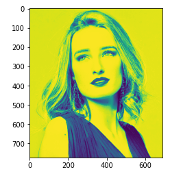 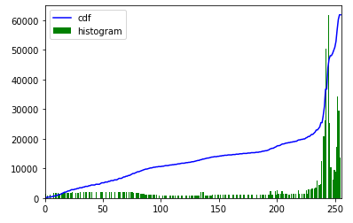Após a aplicação do equalizador, a nova imagem apresentou picos de concentração de pixels na faixa de 240 a 250, resultando em uma imagem bem mais clara que a original.
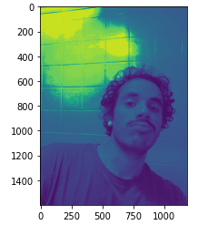 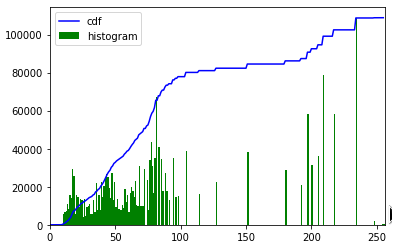Após a aplicação do equalizador, apresentou uma concentração de pixels na faixa de 10 - 100 e picos de pixels entre 180 - 220. O resultado foi uma foto mais escura que a original.
Abaixo estão as imagens obtidas apos a equalização utilizando a função cv.equalizeHist() do OpenCV . Os resultados obtidos foram melhores do que os obtidos aplicando a função de transformação.
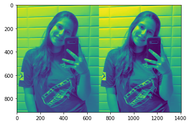 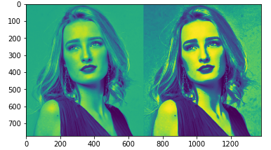
CLAHE
Para não perder informação devido ao excesso de brilho das imagens, utiliza-se a equalização de histograma adaptativa, na qual a imagem é dividida em varios blocos antes da aplicação da função de equalizaçã.
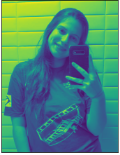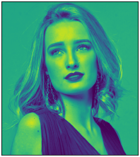
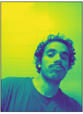
SIMPLE THRESHOLDING
Método que determina um limiar abaixo do qual os pixels são transformados em zero, e acima são transformados no valor máximo definido. Utilizou-se um código onde aplica-se cinco funções: transformaçã binária, transformação binária invertida, transformação truncada, transformação para zero e transformação para zero invertida.
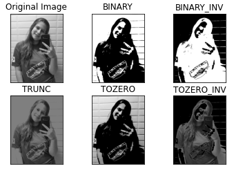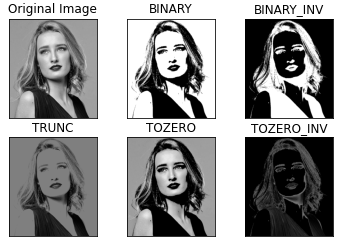

ADAPTATIVE THRESHOLDING
No caso anterior, o limiar é um valor definido, o que pode não ser o ideial em imagens com diferentes graus de iluminação. Por isso, aplica-se o Método Adaptive Thresholding, onde o algoritmo determina o limiar para um pixel com base em uma pequena região ao seu redor.
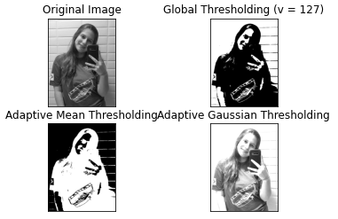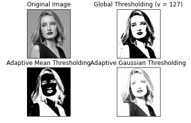
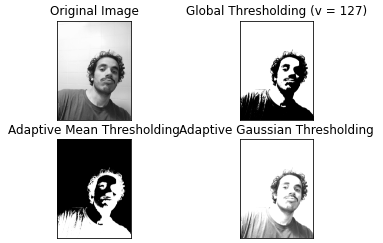
OTSU'S BINARIZATION
Este método determina um valor de limiar global ideal a partir do histograma da imagem. Comparando a aplicação do mé todo Global Thresholding e da aplicação do Otsu's Thresholding, pode-se observar que a imagem resultante do Otsu's Thresholding apresenta melhor resultado.
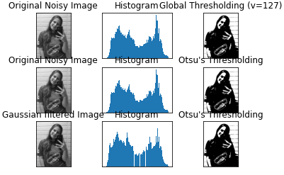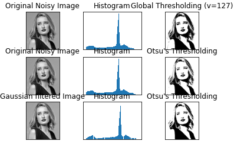
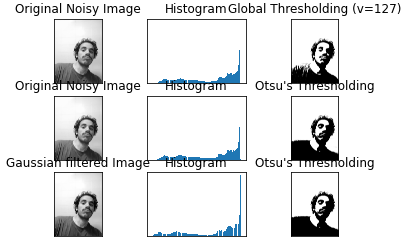